정보처리기사(구) (2014-03-02 기출문제)
1과목: 데이터 베이스
1. SQL의 명령은 사용 용도에 따라 DDL, DML, DCL로 분할 수 있다. 다음 명령 중 그 성격이 나머지 셋과 다른 하나는?
- CREATE
- SELECT
- INSERT
- UPDATE
(정답률: 79%)

2. 개체-관계 모델(E-R Model)에 대한 설명으로 옳지 않은 것은?
- 특정 DBMS를 고려한 것은 아니다.
- E-R 다이어그램에서 개체 타입은 사각형, 관계 타입은 타원, 속성은 다이아몬드로 나타낸다.
- 개체 타입과 관계 타입을 기본 개념으로 현실 세계를 개념적으로 표현하는 방법이다.
- 1976년 Peter Chen이 제안하였다.
(정답률: 75%)
3. 분산 데이터베이스에 대한 설명으로 거리가 먼 것은?
- 분산 제어가 용이하다.
- 지역 자치성이 높다.
- 효용성과 융통성이 높다.
- 점진적 시스템 확장이 어렵다.
(정답률: 78%)
4. 릴레이션의 특징으로 옳은 내용 모두를 나열한 것은?
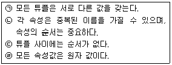
- (ㄱ), (ㄴ)
- (ㄱ), (ㄷ)
- (ㄱ), (ㄷ), (ㄹ)
- (ㄱ), (ㄴ), (ㄷ), (ㄹ)
(정답률: 83%)
5. 데이터베이스의 3층 스키마 중 모든 응용시스템과 사용자들이 필요로 하는 데이터를 통합한 조직 전체의 데이터베이스 구조를 논리적으로 정의하는 스키마는?
- 개념스키마
- 외부스키마
- 내부스키마
- 응용스키마
(정답률: 70%)
6. 관계 대수 및 관계 해석에 대한 옳은 설명 모두를 나열한 것은?
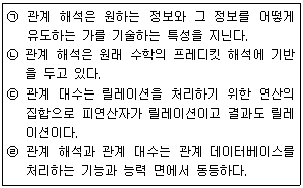
- (ㄱ), (ㄴ)
- (ㄱ), (ㄷ), (ㄹ)
- (ㄴ), (ㄷ), (ㄹ)
- (ㄱ), (ㄴ), (ㄷ), (ㄹ)
(정답률: 47%)
7. 다음 설명이 의미하는 것은?
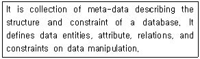
- Data Dictionary
- Primary Key
- Transaction
- Schema
(정답률: 76%)
8. 어떤 릴레이션에서 R에서 X와 Y를 각각 R의 속성 집합의 부분 집합이라고 할 경우 속성 X의 값 각각에 대해 시간에 관계없이 항상 속성 Y의 값이 오직 하나만 연관되어 있을 때 Y는 X에 함수적 종속이라고 한다. 이를 기호로 옳게 표기한 것은?
- X ≫ Y
- Y ≫ X
- Y → X
- X → Y
(정답률: 72%)
9. 시스템 카탈로그에 대한 설명으로 옳지 않은 것은?
- 시스템 카탈로그는 DBMS가 스스로 생성하고 유지하는 데이터베이스 내의 특별한 테이블들의 집합체이다.
- 데이터베이스 구조가 변경될 때마다 DBMS는 자동적으로 시스템 카탈로그 테이블들의 행을 삽입, 삭제, 수정한다.
- 시스템 카탈로그는 데이터베이스 구조에 관한 메타 데이터를 포함한다.
- 일반 사용자도 SQL을 이용하여 시스템 카탈로그를 직접 갱신할 수 있다.
(정답률: 80%)
10. 다음 그림에서 트리의 Degree와 터미널 노드의 수는?
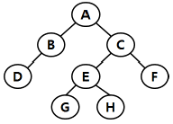
- 트리의 Degree : 4, 터미널 노드 : 4
- 트리의 Degree : 2, 터미널 노드 : 4
- 트리의 Degree : 4, 터미널 노드 : 8
- 트리의 Degree : 2, 터미널 노드 : 8
(정답률: 76%)
11. 데이터베이스 설계 시 물리적 설계 단계에서 수행하는 사항이 아닌 것은?
- 저장 레코드 양식 설계
- 레코드 집중의 분석 및 설계
- 접근 경로 설계
- 목표 DBMS에 맞는 스키마 설계
(정답률: 72%)
12. 다음 자료에 대하여 “selection sort”를 사용하여 오름차순으로 정렬할 경우 PASS 3의 결과는?
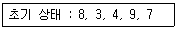
- 3, 4, 7, 9, 8
- 3, 4, 8, 9, 7
- 3, 8, 4, 9, 7
- 3, 4, 7, 8, 9
(정답률: 58%)
13. 데이터베이스 정의와 거리가 먼 것은?
- integrated data
- operational data
- stored data
- exclusive data
(정답률: 78%)
14. 색인 순차 파일에 대한 설명으로 옳지 않은 것은?
- 순차 처리와 직접 처리가 모두 가능하다.
- 레코드를 추가 및 삽입하는 경우, 파일 전체를 복사할 필요가 없다.
- 인덱스를 저장하기 위한 공간과 오버플로우 처리를 위한 별도의 공간이 필요 없다.
- 색인 구역은 트랙 색인 구역, 실린더 색인 구역, 마스터 색인 구역으로 구성된다.
(정답률: 70%)
15. 데이터 모델의 구성 요소 중 데이터베이스에 표현된 개체 인스턴스를 처리하는 작업에 대한 명세로서 데이터베이스를 조작하는 기본 도구를 의미하는 것은?
- Relation
- Structure
- Constraint
- Operation
(정답률: 63%)
16. 데이터베이스의 특성 중 다음 설명에 해당 하는 것은?
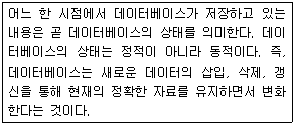
- Time Accessibility
- Concurrent Sharing
- Content Reference
- Continuous Evolution
(정답률: 71%)
17. What is the degree of a relation?
- the number of occurrences n of its relation schema
- the number of tables n of its relation schema
- the number of attributes n of its relation schema
- the number of key n of its relation schema
(정답률: 75%)
18. What is the degree of a relation?
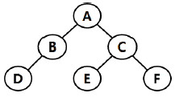
- 2
- 3
- 4
- 5
(정답률: 75%)
19. 다음 표와 같은 판매실적 테이블에 대하여 서울지역에 한하여 판매액 내림차순으로 지점명과 판매액을 출력하고자 한다. 가장 적절한 SQL 구문은?
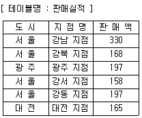
- SELECT 지점명, 판매액 FROM 판매실적 WHERE 도시 = “서울” ORDER BY 판매액 DESC;
- SELECT 지점명, 판매액 FROM 판매실적 ORDER BY 판매액 DESC;
- SELECT 지점명, 판매액 FROM 판매실적 WHERE 도시 = “서울” ASC;
- SELECT * FROM 판매실적 WHEN 도시 = “서울” ORDER BY 판매액 DESC;
(정답률: 77%)
20. 병행제어 로킹(Locking)에 대한 설명으로 옳지 않은 것은?
- 로킹 단위가 작아지면 병행성 수준이 낮아진다.
- 로킹은 주요 데이터의 액세스를 상호 배타적으로 운영 하는 것이다.
- 로킹 단위는 병행제어에서 한꺼번에 로킹할 수 있는 객체의 크기를 의미한다.
- 데이터베이스, 파일, 레코드 등은 로킹 단위가 될 수 있다.
(정답률: 79%)
2과목: 전자 계산기 구조
21. 다음 논리회로의 결과로 옳은 것은?(오류 신고가 접수된 문제입니다. 반드시 정답과 해설을 확인하시기 바랍니다.)
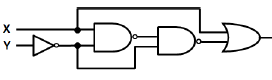
- X
- Y
- X + Y
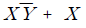
(정답률: 44%)
22. 보조기억장치의 일반적인 특징으로 옳지 않은 것은?
- 중앙처리장치와 직접 자료 교환이 불가능하다.
- 접근 시간(access time)이 크다.
- 일반적으로 주기억장치에 데이터를 저장할 때는 DMA 방식을 사용한다.
- CPU에 의한 기억장치의 접근 빈도가 높다.
(정답률: 44%)
23. 피연산자의 위치(기억 장소)에 따라 명령어 형식을 분류할 때 instruction cycle time이 가장 짧은 명령어 형식은?
- 레지스터-메모리 인스터럭션
- AC 인스터럭션
- 스택 인스트럭션
- 메모리-메모리 인스트럭션
(정답률: 52%)
24. 4비트의 데이터 비트와 1비트의 패리티 비트가 사용되는 경우 몇 개 비트까지 에러를 검출할 수 있는가?
- 1
- 2
- 3
- 4
(정답률: 43%)
25. 오류 검출용 코드가 아닌 것은?
- 해밍 코드
- 패리티 검사 코드
- Biquinary 코드
- Excess-3 코드
(정답률: 58%)
26. flynn의 분류법 중 여러 개의 처리기에서 수행되는 인스트럭션(instruction)들은 각기 다르나 전체적으로 하나의 데이터 스트림을 가지는 형태는?
- SISD
- MISD
- SIMD
- MIMD
(정답률: 68%)
27. 주소 설계 시 고려해야할 점이 아닌 것은?
- 주소를 효율적으로 나타낼 수 있어야 한다.
- 주소 공간과 기억 공간을 독립시킬 수 있어야 한다.
- 전반적으로 수행 속도가 증가될 수 있도록 해야 한다.
- 주소 공간과 기억 공간은 항상 일치해야 한다.
(정답률: 70%)
28. 주기억장치는 하드웨어의 특성상 주기억장치가 제공 할 수 있는 정보 전달 능력에 한계가 있는데, 이 한계를 무엇이라 하는가?
- 주기억장치 전달(transfer)
- 주기억장치 대역폭(bandwidth)
- 주기억장치 접근폭(accesswidth)
- 주기억장치 정보 전달폭(transferwidth)
(정답률: 69%)
29. 사용자 프로그램에 할당된 영역이 EC00h – FFFFh일 경우 사용 가능한 크기는 모두 몇 Kbyte인가?
- 3KByte
- 4KByte
- 5KByte
- 6KByte
(정답률: 37%)
30. 다음 소자 중에서 ROM과 유사한 성격을 가지며, AND array와 OR array로 구성된 것은?
- PLA
- shift register
- RAM
- LSI
(정답률: 52%)
31. 데이터의 주소를 표현하는 방식에 따라 분류할 때 계산에 의한 주소는 어디에 해당하는가?
- 완전 주소
- 약식 주소
- 생략 주소
- 자료 자신
(정답률: 52%)
32. 기억장치의 용량이 1M워드(word)이고 1워드가 32비트인 경우 PC(program counter), MAR(memory address register), MBR(memory buffer register)의 각 비트수는?
- PC : 20비트, MAR : 20비트, MBR : 32비트
- PC : 20비트, MAR : 32비트, MBR : 32비트
- PC : 32비트, MAR : 20비트, MBR : 20비트
- PC : 32비트, MAR : 32비트, MBR : 20비트
(정답률: 57%)
33. 메모리 인터리빙(interleaving)의 설명으로 옳지 않은 것은?
- 단위 시간에 여러 메모리의 접근이 불가능하도록 하는 방법이다.
- 캐시 기억장치, 고속 DMA 전송 등에서 많이 사용 된다.
- 기억장치의 접근시간을 효율적으로 높일 수 있다.
- 각 모듈을 번갈아 가면서 접근(access)할 수 있다.
(정답률: 62%)
34. 명령문 구성 형태 중 하나의 오퍼랜드가 누산기 속에 포함된 명령 형식은?
- 0-주소
- 1-주소
- 2-주소
- 3-주소
(정답률: 67%)
35. 순서 논리회로에 대한 설명 중 옳지 않은 것은?
- 순서 논리 회로는 논리 게이트 외에 메모리 요소와 귀환(feedback) 기능을 포함한다.
- 순서 논리 회로의 출력은 현재 상태의 입력상태와 전 상태에 의해 결정되며 회로의 동작은 내부 상태와 입력들의 시간 순차에 의해 결정된다.
- 순서 논리 회로의 출력은 입력 상태와 메모리 요소들의 상태에 따라 값이 결정되므로 언제나 일정한 값을 갖지 않는다.
- 순서 논리 회로는 현재 상태가 다음 상태의 출력에 영향을 미치는 논리 회로로서 플립플롭, 패리티 발생기, 멀티플렉서 등이 있다.
(정답률: 43%)
36. 마이크로 오퍼레이션에 대한 설명 중 옳지 않은 것은?
- 마이크로 오퍼레이션은 CPU 내의 레지스터들과 연산장치에 의해서 이루어진다.
- 프로그램에 의한 명령의 수행은 마이크로 오퍼레이션의 수행으로 이루어진다.
- 마이크로 오퍼레이션 중에 CPU 내부의 연산 레지스터, 인덱스 레지스터는 프로그램으로 레지스터의 내용을 변경할 수 없다.
- 마이크로 오퍼레이션이 실행될 때마다 CPU 내부의 상태는 변하게 된다.
(정답률: 57%)
37. 다음과 같은 마이크로 동작은 어떤 명령의 수행과정을 나타내는 것인가?
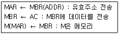
- Load to AC
- AND to AC
- Branch Unconditionally
- Store AC
(정답률: 42%)
38. 다음 중 2의 보수 (2′s complement) 가산 회로로서 정수 곱셈을 이행할 경우 필요 없는 것은?
- shift
- add
- complement
- normalize
(정답률: 50%)
39. 연산 명령 자체로 특수한 곱셈과 나눗셈을 수행하거나 혹은 곱셈과 나눗셈에 보조적으로 이용되는 것은?
- 산술적 shift
- 논리적 shift
- ADD
- rotate
(정답률: 61%)
40. 마이크로 명령 형식으로 적합하지 않은 것은?
- 수평 마이크로 명령
- 제어 마이크로 명령
- 수직 마이크로 명령
- 나노 명령
(정답률: 41%)
3과목: 운영체제
41. 다음의 운영체제 운용 기법 중 라운드 로빈(Round Robin) 방식과 가장 관계되는 것은?
- 일괄 처리 시스템
- 시분할 시스템
- 실시간 처리 시스템
- 다중 프로그래밍 시스템
(정답률: 65%)
42. 디스크 스케줄링 기법 중 다음 설명에 해당하는 것은?
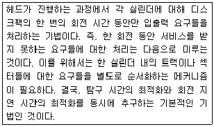
- SSTF 스케줄링
- Eschenbach 스케줄링
- FCFS 스케줄링
- N-SCAN 스케줄링
(정답률: 40%)
43. 세그먼테이션 기법에 대한 설명으로 옳지 않은 것은?
- 각 세그먼트는 고유한 이름과 크기를 갖는다.
- 세그먼트 맵 테이블이 필요하다.
- 프로그램을 일정한 크기로 나눈 단위를 세그먼트라고 한다.
- 기억장치 보호키가 필요하다.
(정답률: 45%)
44. 스레드의 특징으로 옳지 않은 것은?
- 실행 환경을 공유시켜 기억장소의 낭비가 줄어든다.
- 프로세스 외부에 존재하는 스레드도 있다.
- 하나의 프로세스를 여러 개의 스레드로 생성하여 병행성을 증진시킬 수 있다.
- 프로세스들 간의 통신을 향상시킬 수 있다.
(정답률: 63%)
45. 다중 처리기 운영체제 형태 중 주/종(Master/Slave) 처리기에 대한 설명으로 옳지 않은 것은?(문제 오류로 가답안 발표시 1번으로 발표 되었지만 확정답안 발표시 1, 4번이 정답 처리 되었습니다. 여기서는 1번을 누르시면 정답 처리 됩니다.)
- 종 프로세서가 운영체제를 수행한다.
- 주 프로세서가 고장이 나면 시스템 전체가 다운된다.
- 하나의 프로세서를 주 프로세서로 지정하고, 다른 처리기들은 종 프로세서로 지정하는 구조이다.
- 주 프로세서와 종 프로세서가 모두 입출력을 수행하기 때문에 비대칭 구조를 갖는다.
(정답률: 76%)
46. 프로세스(Process)에 대한 옳은 설명 모두를 나열한 것은?
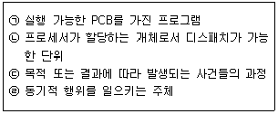
- (ㄱ), (ㄴ), (ㄷ)
- (ㄱ), (ㄴ), (ㄹ)
- (ㄱ), (ㄷ), (ㄹ)
- (ㄴ), (ㄷ), (ㄹ)
(정답률: 64%)
47. 다음 설명에 해당하는 디렉토리 구조는?
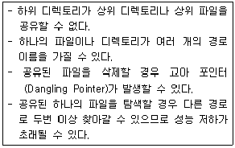
- 트리 디렉토리
- 1단계 디렉토리
- 2단계 디렉토리
- 비순환 그래프 디렉토리
(정답률: 54%)
48. 주기억 장치 관리기법 중 Worst-fit을 적용할 경우 8K의 프로그램이 할당될 영역으로 옳은 것은?
- 영역 1
- 영역 2
- 영역 3
- 영역 4
(정답률: 73%)
49. UNIX 파일 시스템의 inode에서 관리하는 정보가 아닌 것은?
- 파일의 링크수
- 파일이 만들어진 시간
- 파일이 최초로 수정된 시간
- 파일의 크기
(정답률: 68%)
50. 3개의 페이지를 수용할 수 있는 주기억장치가 있으며, 초기에는 모두 비어있다고 가정한다. 다음의 순서로 페이지 참조가 발생할 때, FIFO 페이지 교체 알고리즘을 사용할 경우 몇 번의 페이지 결함이 발생하는가?
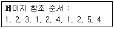
- 6
- 7
- 8
- 9
(정답률: 56%)
51. HRN 방식으로 스케줄링 할 경우, 입력된 작업이 다음과 같을 때 우선순위가 가장 높은 것은?
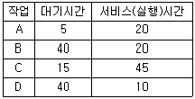
- A
- B
- C
- D
(정답률: 71%)
52. 워킹 셋(Working Set)에 대한 설명으로 옳지 않은 것은?
- 프로세스가 실행하는 과정에서 시간이 지남에 따라 자주 참조하는 페이지들의 집합이 변화하기 때문에 워킹 셋은 시간에 따라 바뀌게 된다.
- 프로그램의 구역성(Locality) 특징을 이용한다.
- 워킹 셋에 속한 페이지를 참조하면 프로세스의 기억장치 사용은 안전상태가 된다.
- 페이지 이동에 소요되는 시간과 프로세스 수행에 소요되는 시간의 차이를 의미 한다.
(정답률: 52%)
53. 프로세서의 상호 연결 구조 중 하이퍼 큐브 구조에서 각 CPU가 4개의 연결점을 가질 경우 CPU의 총 개수는?
- 4
- 16
- 32
- 65536
(정답률: 72%)
54. 분산 운영체제 구조 중 다음의 특징을 갖는 것은?
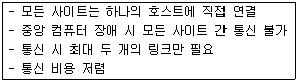
- 링 연결 구조(RING)
- 다중접근 버스 연결구조(MULTI ACCESS BUS)
- 계층 연결구조(HIERARCHY)
- 성형 연결구조(STAR)
(정답률: 67%)
55. UNIX에서 새로운 프로세스를 생성하는 명령은?
- fork
- exit
- getpid
- pipe
(정답률: 70%)
56. 다음과 같은 접근제어 행렬에 대한 설명 중 옳은 것은?(단, E : 실행가능, R : 판독가능, W : 기록가능, NONE : 모든 권한 없음)
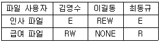
- 김영수는 인사와 급여파일을 판독하고 기록할 수 있다.
- 이길동은 인사와 급여파일을 판독할 수 있다.
- 최동규는 급여파일을 기록할 수 있다.
- 이길동은 인사파일에 대하여 실행, 판독, 기록의 권한을 가지고 있다.
(정답률: 74%)
57. UNIX에 대한 옳은 설명 모두를 나열한 것은?
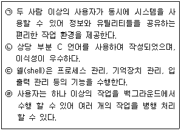
- (ㄱ), (ㄴ)
- (ㄱ), (ㄴ), (ㄷ)
- (ㄱ), (ㄴ), (ㄹ)
- 모두 아니다
(정답률: 68%)
58. 운영체제의 목적 중 다음 설명에 해당하는 것은?
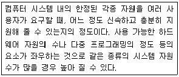
- reliability
- throughput
- turn-around time
- availability
(정답률: 63%)
59. 프로세스 제어블록(Process Control Block)에 대한 설명으로 옳지 않은 것은?
- 프로세스에 할당된 자원에 대한 정보를 갖고 있다.
- 프로세스의 우선 순위에 대한 정보를 갖고 있다.
- 부모 프로세스와 자식 프로세스는 PCB를 공유한다.
- 프로세스의 현 상태를 알 수 있다.
(정답률: 63%)
60. 운영체제에 대한 옳은 설명으로만 짝지어진 것은?
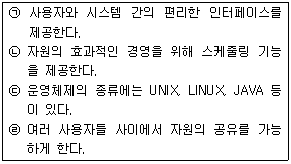
- (ㄱ), (ㄷ)
- (ㄱ), (ㄴ), (ㄹ)
- (ㄱ), (ㄷ), (ㄹ)
- (ㄱ), (ㄴ), (ㄷ), (ㄹ)
(정답률: 74%)
4과목: 소프트웨어 공학
61. 민주주의적 팀(Democratic Team)에 대한 내용으로 옳은 것은?
- 프로젝트 팀의 목표 설정 및 의사결정 권한이 팀 리더에게 주어진다.
- 조직적으로 잘 구성된 중앙 집중식 구조이다.
- 팀 구성원 간의 의사교류를 활성화시키므로 팀원의 참여도와 만족도를 증대시킨다.
- 팀 리더의 개인적 능력이 가장 중요하다.
(정답률: 74%)
62. CPM(Critical Path Method)에 대한 설명으로 옳지 않은 것은?
- 프로젝트 내에서 각 작업이 수행되는 시간과 각 작업 사이의 관계를 파악할 수 있다.
- 작업 일정을 한눈에 볼 수 있도록 해주며 막대 그래프의 형태로 표현한다.
- 경영층의 과학적인 의사 결정을 지원한다.
- 효과적인 프로젝트의 통제를 가능하게 해 준다.
(정답률: 55%)
63. 소프트웨어 재공학 활동 중 역공학에 해당하는 것은?
- 소프트웨어 동작 이해 및 재공학 대상 선정
- 소프트웨어 기능 변경 없이 소프트웨어 형태를 목적에 맞게 수정
- 원시 코드로부터 설계정보 추출 및 절차 설계 표현, 프로그램과 데이터 구조 정보 추출
- 기존 소프트웨어 시스템을 새로운 기술 또는 하드웨어 환경에 이식
(정답률: 55%)
64. 시스템에서 모듈 사이의 결합도(Coupling)에 대한 설명으로 옳은 것은?
- 한 모듈 내에 있는 처리요소들 사이의 기능적인 연관 정도를 나타낸다.
- 결합도가 높으면 시스템을 구현하고 유지보수 작업이 쉽다.
- 모듈간의 결합도를 약하게 하면 모듈 독립성이 향상된다.
- 자료결합도는 내용결합도 보다 결합도가 높다.
(정답률: 60%)
65. 소프트웨어 재사용과 관련하여 객체들의 모임, 대규모 재사용 단위로 정의되는 것은?
- Component
- Sheet
- Framework
- Cell
(정답률: 59%)
66. 럼바우 분석 기법에서 자료 흐름도를 사용하여 프로세스들의 처리 과정을 기술하는 것과 관계되는 것은?
- 객체 모델링
- 동적 모델링
- 기능 모델링
- 정적 모델링
(정답률: 49%)
67. 소프트웨어의 재사용으로 인한 효과와 거리가 먼 것은?
- 시스템 구조와 구축방법의 교육적 효과
- 새로운 개발 방법 도입의 용이성
- 개발기간 및 비용 절약
- 개발시 작성된 문서의 공유
(정답률: 70%)
68. CASE가 갖고 있는 주요 기능이 아닌 것은?
- 그래픽 지원
- 소프트웨어 생명주기 전 단계의 연결
- 언어 번역
- 다양한 소프트웨어 개발 모형 지원
(정답률: 66%)
69. 소프트웨어 프로젝트 관리를 효과적으로 수행하는데 필요한 3P에 해당하지 않는 것은?
- Process
- Problem
- People
- Procedure
(정답률: 74%)
70. 다음 설명의 ( ) 내용으로 옳은 것은?
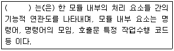
- Validation
- Coupling
- Cohesion
- Interface
(정답률: 58%)
71. FTR의 지침 사항으로 거리가 먼 것은?
- 자원과 시간 일정을 할당한다.
- 문제 영역을 명확히 표현한다.
- 논쟁과 반박을 제한하지 않는다.
- 모든 검토자들을 위해 의미 있는 훈련을 행한다.
(정답률: 73%)
72. LOC 기법에 의하여 예측된 총 라인수가 50000라인, 프로그래머의 월 평균 생산성이 200라인, 개발 참여 프로그래머가 10인 일 때, 개발 소요 기간은?
- 25개월
- 50개월
- 200개월
- 2000개월
(정답률: 73%)
73. 블랙박스 검사 기법에 해당하는 것으로만 짝지어진 것은?
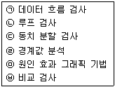
- (ㄱ), (ㄴ)
- (ㄱ), (ㄴ), (ㅁ), (ㅂ)
- (ㄷ), (ㄹ), (ㅁ), (ㅂ)
- (ㄱ), (ㄷ), (ㄹ), (ㅁ), (ㅂ)
(정답률: 68%)
74. 유지보수의 종류 중 장래의 유지보수성 또는 신뢰성을 개선하거나 소프트웨어의 오류발생에 대비하여 미리 예방수단을 강구해 두는 것은?
- Preventive maintenance
- Corrective maintenance
- Perfective maintenance
- Adaptive maintenance
(정답률: 70%)
75. 소프트웨어 형상관리(Configuration management)에 관한 설명으로 거리가 먼 것은?
- 소프트웨어에서 일어나는 수정이나 변경을 알아내고 제어하는 것을 의미한다.
- 소프트웨어 개발의 전체 비용을 줄이고, 개발 과정의 여러 방해 요인이 최소화되도록 보장하는 것을 목적으로 한다.
- 형상관리를 위하여 구성된 팀을 “chief programmer team”이라고 한다.
- 형상관리에서 중요한 기술 중의 하나는 버전 제어 기술이다.
(정답률: 53%)
76. 소프트웨어 역공학(Software reverse engineering)에 대한 설명으로 옳지 않은 것은?
- 역공학의 가장 간단하고 오래된 형태는 재문서화라고 할 수 있다.
- 기존 소프트웨어의 구성 요소와 그 관계를 파악하여 설계도를 추출한다.
- 원시 코드를 분석하여 소프트웨어의 관계를 파악한다.
- 대상 시스템 없이 새로운 시스템으로 개선하는 변경 작업이다.
(정답률: 70%)
77. 소프트웨어 위기 발생요인과 거리가 먼 것은?
- 소프트웨어 개발 적체 현상
- 프로젝트 개발 일정과 예산 측정의 어려움
- 소프트웨어 생산성 기술의 낙후
- 소프트웨어 규모의 증대와 복잡도에 따른 개발 비용 감소
(정답률: 68%)
78. 소프트웨어 품질 목표 중 쉽게 배우고 사용할 수 있는 정도를 의미하는 것은?
- Reliability
- Usability
- Efficiency
- Integrity
(정답률: 73%)
79. 나선형(Spiral) 모형에 대한 설명으로 옳지 않은 것은?
- 대규모 시스템의 소프트웨어 개발에 적합하다.
- 실제 개발될 소프트웨어에 대한 시제품을 만들어 최종 결과물을 예측한다.
- 위험성 평가에 크게 의존하기 때문에 이를 발견하지 않으면 문제가 발생할 수 있다.
- 여러 번의 개발 과정을 거쳐 점진적으로 완벽한 소프트웨어를 개발한다.
(정답률: 57%)
80. 다음의 객체지향 기법에 관한 설명에서 ( ) 안 내용으로 공통 적용될 수 있는 것은?
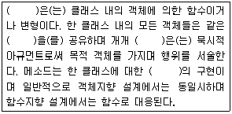
- 인스턴스
- 오퍼레이션
- 메시지
- 정보은닉
(정답률: 43%)
5과목: 데이터 통신
81. 디지털 데이터를 아날로그 신호로 변조하는 방법으로만 나열된 것은?
- 위상 변조, 진폭 변조
- 주파수 변조, 시간 변조
- 진폭 편이 변조, 시간 편이 변조
- 주파수 편이 변조, 위상 편이 변조
(정답률: 52%)
82. IETF에서 고안한 IPv4에서 IPv6로 전환(천이)하는데 사용되는 전략이 아닌 것은?
- Dual stack
- Tunneling
- Header translation
- Source routing
(정답률: 53%)
83. 회선을 제어하기 위한 제어 문자 중 실제 전송할 데이터 집합의 시작임을 의미하는 것은?
- SOH
- STX
- SYN
- DLE
(정답률: 64%)
84. X.25 프로토콜에서 정의하고 있는 것은?
- 다이얼 접속(dial access)을 위한 기술
- start-stop 데이터를 위한 기술
- 데이터 비트 전송률
- DTE와 DCE 간 상호접속 및 통신절차 규정
(정답률: 62%)
85. 토큰 패싱 방식에서 토큰에 대하여 가장 올바르게 설명한 것은?
- 데이터 통신 시 에러를 체크하기 위해 사용된다.
- 전송할 데이터를 의미한다.
- 채널 사용권을 의미한다.
- 5바이트로 구성되어 있다.
(정답률: 49%)
86. 다음 중 통신망의 체계적인 운용 및 관리를 위한 TMN(Telecommunication Management Network)의 기능 요소에 해당하지 않는 것은?
- SNL(System Network Layer)
- NML(Network Management Layer)
- EML(Element Management Layer)
- NEL(Network Element Layer)
(정답률: 39%)
87. OSI 7계층 중 데이터 링크 계층의 프로토콜로 틀린 것은?
- HTTP
- HDLC
- PPP
- LLC
(정답률: 58%)
88. 다수의 타임 슬롯으로 하나의 프레임이 구성되고, 각 타임 슬롯에 채널을 할당하여 다중화하는 것은?
- TDM
- CDM
- FDM
- CSM
(정답률: 65%)
89. 인터넷 상의 서버와 클라이언트 사이의 멀티미디어를 송수신하기 위한 프로토콜과 웹 문서를 작성하기 위해 사용하는 언어를 순서대로 바르게 나열한 것은?
- URI, URL
- HTTP, MHS
- HTTP, HTML
- WWW. HTTP
(정답률: 70%)
90. 수신측에서 수신된 데이터에 대한 확인(Acknowledgement)을 즉시 보내지 않고 전송할 데이터가 있는 경우에만, 제어 프레임을 별도로 사용하지 않고 기존의 데이터 프레임에 확인 필드를 덧붙여 전송하는 흐름제어 방식은?
- Stop and Wait
- Sliding Window
- Piggyback
- Polling
(정답률: 50%)
91. 다음이 설명하고 있는 에러 검출 방식은?
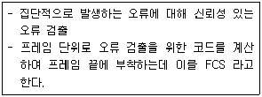
- Cyclic Redundancy Check
- Hamming Code
- Parity Check
- Block Sum Check
(정답률: 57%)
92. 하나의 통신채널을 이용하여 데이터의 송신과 수신이 교번식으로 가능한 통신방식은?
- 반이중 통신
- 전이중 통신
- 단방향 통신
- 시분할 통신
(정답률: 59%)
93. 매체 접근 제어 방식 중 CSMA/CD와 토큰 패싱(Token passing)에 대한 설명으로 틀린 것은?
- CSMA/CD는 버스 또는 트리 토폴로지에서 가장 많이 사용되는 기법이다.
- 토큰 패싱은 토큰을 분실할 가능성이 있다.
- 토큰 패싱은 노드가 증가하면 성능이 좋아진다.
- CSMA/CD는 비경쟁 기법의 단점인 대기시간의 상당 부분이 제거될 수 있다.
(정답률: 53%)
94. RTCP(Real-Time Control Protocol)의 특징으로 틀린 것은?
- Session의 모든 참여자에게 컨트롤 패킷을 주기적으로 전송한다.
- 데이터 분배에 대한 피드백을 제공하지 않는다.
- 하위 프로토콜은 데이터 패킷과 컨트롤 패킷의 멀티 플렉싱을 제공한다.
- 데이터 전송을 모니터링하고 최소한의 제어와 인증 기능만을 제공한다.
(정답률: 45%)
95. 대역폭(bandwidth)에 대한 설명으로 옳은 것은?
- 최고 주파수를 의미한다.
- 최저 주파수를 의미한다.
- 최고 주파수의 절반을 의미한다.
- 최고 주파수와 최저 주파수 사이 간격을 의미한다.
(정답률: 74%)
96. 데이터 통신에서 동기 전송방식에 대한 설명으로 틀린 것은?
- 문자 또는 비트들의 데이터 블록을 송수신 한다.
- 전송데이터와 제어정보를 합쳐서 레코드라 한다.
- 수신기가 데이터 블록의 시작과 끝을 정확히 인식하기 위한 프레임 레벨의 동기화가 요구된다.
- 문자위주와 비트위주 동기식 전송으로 구분된다.
(정답률: 34%)
97. 데이터 전송제어 절차가 순서대로 올바르게 나열된 것은?
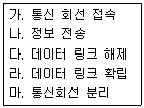
- 가→라→나→다→마
- 마→가→나→라→다
- 가→나→다→라→마
- 라→나→가→다→마
(정답률: 72%)
98. HDLC 프레임 구조 중 헤더를 구성하는 플래그(flag)에 대한 설명으로 틀린 것은?
- 프레임의 최종 목적 주소를 나타낸다.
- 동기화에 사용된다.
- 프레임의 시작과 끝을 표시한다.
- 항상 01111110의 형식을 취한다.
(정답률: 46%)
99. 송신 스테이션이 데이터 프레임을 연속적으로 전송해 나가다가 NAK를 수신하게 되면 에러가 발생한 프레임을 포함하여 그 이후에 전송된 모든 데이터 프레임을 재전송 하는 방식은?
- Stop-and-wait ARQ
- Go-back-N ARQ
- Selective-Repeat ARQ
- Non Selective-Repeat ARQ
(정답률: 66%)
100. OSI 7계층 중 통신망을 통한 목적지까지 패킷 전달을 담당하는 계층은?
- 데이터링크 계층
- 네트워크 계층
- 전송 계층
- 표현 계층
(정답률: 41%)
"CREATE"는 DDL(Data Definition Language) 명령으로, 데이터베이스나 테이블, 인덱스 등을 생성하는 명령입니다. 나머지 "SELECT", "INSERT", "UPDATE"는 DML(Data Manipulation Language) 명령으로, 데이터를 조회하거나 삽입, 수정하는 명령입니다.